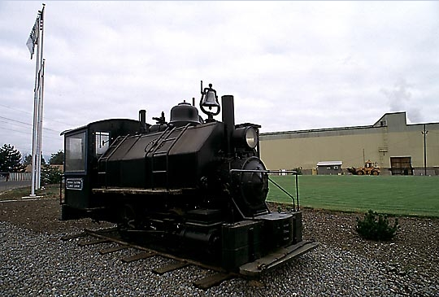

Last updated: 26 June, 2015
| Builder: | Vulcan Iron Works (Wilkes-Barre) |
| Build #: | 224 |
| Date: | 1900 |
| Engine #: | 11 (7) |
| Railroad: | Michigan-California Lumber (Waddle & Fitch) |
| Website: | |
| Email: | |
| Location: | W McAndrews Rd & Sage Rd., Medford, OR 97501 |
| GPS: | 42.336251, -122.886903 Park anywhere. |
| Phone: | |
| Status: | Operational?? |
| Notes: | This interesting 0-4-0T was built in 1900 by Vulcan and is displayed near the intersection of McAndrews & Summit in Medford. It was last operated by the Michigan-California Logging Company of Camino, CA as their #11 and was displayed at their mill for a number of years before coming to Oregon. It appears to be in good condition. |
| Class: | |
| Gauge: | 36" |
| F.M.Whyte: | 0-4-0T |
| Drivers: | 31 |
| Gear Ratio: | |
| Tractive Effort: | 5,760 |
| Weight: | 30,000 |
| Weight on Drivers: | 30,000 |
| Length: | |
| Boiler: | |
| Cylinders: | 10x14 |
| Top Speed: | |
| Horsepower: | |
| Fuel: | Wood |
| Fuel Type: | |
| Water: | |
| Steam psi: | 150 |